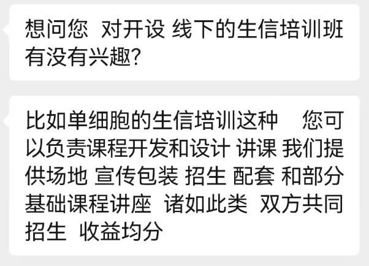
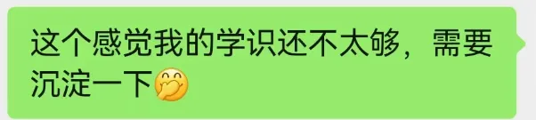
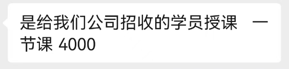

快餐时代洪流中，如何独善其身
原文：https://mp.weixin.qq.com/s?__biz=MzAwMzIzOTk5OQ==&mid=2247502425&idx=1&sn=ff41f32063375b4d26c16664a53709f3&chksm=9b3cb309ac4b3a1f4911f21119e9a25aa8e3a36bff07398275f58e677ca6ed1c2a352ee9ba37#rd 合集：漫谈胡侃
前段时间不少机构向我询问是否能开展课程培训，一方面确实自身实力有限，也都婉拒了。我还是更想自己猫着做些课程发在B站和公众号，向大家讨些点赞 。这么看来这些培训的利润似乎不错，但是也不经让人怀疑，现在市面上的各类生信培训，不会都是网上随便拉个人就给大家开办的吧😂(当然，也要向认真做知识分享 的机构献上敬意)。另一方面吧确实觉得这种两三天的培训有些鸡肋，两三天能学会的同学完全没必要参加，两三天学不会的同学参加了也是白凑热闹。如果有长期的马拉松式 的课程，其实可以参加一下；例如生信技能树 曾老师以及基因学苑 王通老师的一些课程(真不是恰饭，这饭轮不到我来恰)。



最后，还是希望大家能沉下心来，认真的学习一些内容。至于我对于生信学习的建议与看法，大家可以参考这些内容：

如何联系我们

 公众号后台消息更新不及时，超过48h便不允许回复读者消息，这里给大家留一下领取资料、免费服务器(有root权限的共享服务器,注册即送200￥)的微信号[Biomamba_kefu] ，方便各位随时交流、提建议(科研任务繁重，回复不及时请见谅，备注来意会优先通过)。此外呼声一直很高的交流群 也建好了，欢迎大家入群讨论：永久免费的两千人生信、科研交流群, 即将满员
公众号后台消息更新不及时，超过48h便不允许回复读者消息，这里给大家留一下领取资料、免费服务器(有root权限的共享服务器,注册即送200￥)的微信号[Biomamba_kefu] ，方便各位随时交流、提建议(科研任务繁重，回复不及时请见谅，备注来意会优先通过)。此外呼声一直很高的交流群 也建好了，欢迎大家入群讨论：永久免费的两千人生信、科研交流群, 即将满员
大家可以阅读完这几篇之后添加给生信入门初学者的小贴士 如何搜索公众号过往发布内容

 您点的每个赞和在看，我都认真当成了喜欢
您点的每个赞和在看，我都认真当成了喜欢